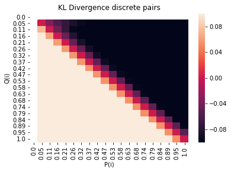

Divergences between distribution
Review of divergences between distributions and generative models
Motivation
Generative modeling is the task of learning a model from data that we can sample new points from.
This often translates into learning a probability distribution that is close to some real data distribution from which we have access to samples.
In recent years deep neural networks have been leveraged to amortize inference across observed data in latent variable models,
sample new points via flexible implicit models and more.
To phrase the more general task of unsupervised learning formally: view the data as a sample from an underlying probability distribution
$\mathcal{Q}$ defined over a Polish space $\mathcal{X}$ (Complete and separable whose topology comes from a distance function).
Denote by $\mathcal{P}_{\mathcal{X}}$ the space of probability measures
$\mu$ defined on $(\mathcal{X},\mathcal{U})$, $\mathcal{U}$: Borel $\sigma$-algebra generated by open sets of $\mathcal{X}$.
Consider a way to compare elements of $\mathcal{P}_{\mathcal{X}}: (P,Q) \rightarrow D(P,Q) \in [0, \infty)$,
The goal, given a family of distributions $\mathcal{P}_\theta \in P_X$, is to find $\min_{\theta}L(\theta)=D(Q, P_{\theta})$ .
One interesting question is how should we choose such a measure of closeness $D$ between the data distribution $Q$ and the approximating distribution $P_\theta$?
Different choices of $D$ lead to different modeling decisions and properties in our final learned model.
In this review we will explore the different classes of divergences and distances
between probability distributions and try to relate desiderata for divergences/distances with the classes of such measures that are consistent with those desiderata. Additionally, we will try to develop a set of ideal desiderata that a divergence/distance should obey for generative modeling and demonstrate whether or not such a measure exists.
In order to examine these questions we will first review existing classes of divergences and distances between distributions and try to place them in a taxonomy showing how they are compare and contrast. Then we will review different popular generative models and elaborate on the connections between them and which underlying $D$ they minimize. In cases where the underlying divergence/distance is unclear we will also try and investigate what it actually is. Finally we will develop an ideal set of desiderata for a divergence/distance in the context of generative modeling and show whether any measure is consistent with them.
Generative models are a very popular approach to unsupervised learning, but without understanding the connections between different modeling approaches and the underlying divergences/distances they minimize, it is difficult to improve on them. Furthermore, If we have a clear understanding of how our choice of measure $D$ will be reflected in our modeling decisions and final learned model, then we can make informed decisions on a case by case basis.
We will begin with a brief safari: going through the main families of statistical distances
and the particular entries that fill their ranks, whenever an existing generative model minimizes a $D$ we encounter, we will describe that in more detail.
Families of statistical distances, pseudodistances and divergences and the
models we find in each
F divergences:
Let P and Q be two probability distributions over a space $\Sigma$ such that P
is absolutely continuous with respect to Q. Then, for a convex function f such
that $f(1) = 0$ the f-divergence of P from Q is defined as
$D_f(P || Q) = \int_{\omega} f(\frac{dP}{dQ})dQ$. In this category we will review
the KL divergence, Hellinger distance and total variation distance. We will also discuss models that minimize those $D$. We will also discuss work showing that any F-divergence can be used to develop an adversarial type
neural sampler.
KL divergence
One of the most popular divergences used to compare probability distributions is the KL divergence.
For discrete distributions the KL-Divergence is :
$$D_{KL}(P || Q) = -\sum_i P(i) \log \frac{Q(i)}{P(i)}$$
Analagously for continous distributions: we use the PDFs for P and Q
and take an integral:
$$D_{KL}(P||Q) = -\int_{-\infty}^{\infty} P(x) \log \frac{Q(x)}{P(x)}$$
The KL divergence has many different interpretations:
- The information gained by using Q instead of P
- The relative entropy between the two distributions
In the context of generative modeling, we can think about this as the
amount of information lost when using an approximate distribution Q to model
a true distribution P.
To gain some intuition, consider the term $$P(i) \log \frac{Q(i)}{P(i)} $$ in the discrete KL.
Lets visualize what that value of that term is for different values of P(i) and Q(i) over
a grid between 0 and 1.

Maximum likelhood learning
The classical method for unsupervised learning, or learning a probability distribution is to learn a density. This is done
by defining a family of desnsities parameterized by parameters $\theta$
such that we maximize the likelihood on the data. Given a parametric family of densities $(P_{\theta})_{\theta \in R^d}$ and data $\{x^{(i)}\}_{i=1}^m$, then maximum likelihood learning can be seen as $\max_{\theta \in R^d} \frac{1}{m} \sum_{i=1}^m \log P_{\theta}(x^{(i)})$
Assymptotically this amounts to minimizing the KL divergence between the real data distribution $P_r$ and $P_{\theta}$
Models that do maximum likelihood learning
Many models do maximum likelihood learning and therefore fit in this class. Some examples include:
- Gaussian mixture models
- Hidden markov models
- Latent dirichlet allocation
- Latent dirichlet allocation
- Variational autoencoder
Benefits and drawbacks of maximum likelihood learning
Maximum likelihood is widely used partly because of its simplicity and that it makes sense intuitively. We specify a model with some free parameters, some observationsn from data. It then makes sense to choose a setting of the free parameters such that the data we observe is highly probably under the model.
One draw back is that if there is truly no model density $P_\theta$, then the KL
distance is undefined. This is usually dealt with in practice by adding noise to the approximating distribution $P_{\theta}$
Total variation distance
The total variation distance between two probability measures $P$ and $Q$ on a sigma algebra $\mathcal{F}$ of subsets of the sample space $\Omega$ is :
$$\delta(P, Q) = \sup_{A \in \mathcal{F}} | P(A) Q(A) |$$
models that utilize total variation distance
It has been shown that energy based GANs optimize total variation under an optimal
discriminator. The energy based gan is trained like a normal gan but with a different loss for the discrimator and generator.
$$\mathcal{L}_D(x, \mathcal{z}) = D(x) + [m - D(G(z))]^{+}$$
$$\mathcal{L}_G(z)=D(G(z)) $$
alpha divergence
The alpha divergence, or Renyi divergence of order $\alpha$ is
$$D_{\alpha}(P || Q) = \frac{1}{\alpha - 1} \log (\sum_{i=1}^n \frac{p_{i}^{\alpha}}{q_{i}^{\alpha-1}} )$$
$F-gans$. (cite nowozin fgan) describe a general way to learn GAN like models using any F-Divergence. They build up from results by (cite nguyen et al) that give a variational method to estimate an f-divergence between two distributions P and Q using only samples. They extend the setting from estimating the divergence for a fixed model to estimating model parameters.
We will now review the original result by nyugen, and the F-Gan approach.
Every convex, semicontinuous function $f$ has a Fenchel conjugate:
$$f^*(t)=sup_{u \in dom_{f}}{ut - f(u)} $$. Nguyen et all use this representation f f to obtain the lower bound on the divergence:
$$D_f(P || Q) = \sup_{T \in \mathcal{T}}(E_{x~P}[T(x)]-E_{x~Q}[f^*(T(x))]$$
Where $\mathcal{T}$ is an arbritrary class of functions $T: \mathcal{X}:\mathbb{R}$.
(citep nowozin et all) use this bound to estimate a generative model Q given a true distribution P. They follow the gan style training procedure where $Q_{\theta}$ is the generative model taking random noise and outputing a sample parameterized by $\theta$, and $T_{\omega}$ is the discrimator function (called the variational function in this context) parameterized by $\omega$ and takes a sample as input, returning a scalar as output.
The F GAN obective is then:
$$F(\theta, \omega)= E_{x~P}[T_{\omega}(x)]- E_{x~Q_{\theta}}[f^*(T_{\omega}(x))]$$
To make this work for all F-Divergences we need to respect the domain
of $f^*$. The authors do this by rewriting $T_{\omega}$ as $T_{\omega}(x) g_f(V_{\omega(x)})$, Now by controlling the range of g_f they can control the domain of $f^*$. This allows them to rewrite the objective above as
$$F(\theta, \omega) = \mathbb{E}_{x~P}[g_f(V_{\omega}(x))] + \mathbb{E}_{x~Q_{\theta}[-F^*()g_f(V_\omega(x))]}$$
The authors provide $f*$, domain for the fenchel conjugate ($dom f^*$), the output activation function $g_f$ for the following F-divergences:
- KL
- Reverse KL
- Pearson $\mathcal{X}$
- Squared Hellinger
- Jensen shannon
Integral probability metrics
$$\gamma_{\mathcal{F}}(P, Q) = \sup_{f \in \mathcal{F}}|\int_{M} f dP - \int_M f dQ| $$
Wasserstein distance
When you choose $\mathcal{F}={f:||f||_L}$ you get a Kantorovich metric.
The Kantorovich-Rubenstein theorem shows that when M is seperable, this metric
is the dual of the wasserstein distance: $W_1(\mathbb{P}, \mathbb{Q}):=\inf_{\mu \in \mathcal{L}(\mathbb{P}, \mathbb{Q})} \int p(x,y) d\mu(x, y)$
Wasserstein gan
Framed in terms of expectations the Kantorovich-Rubenstein duality gives us:
$$W(\mathbb{P_r}, \mathbb{P_{\theta}) = sup_{||f||_L \leq 1} \mathbb[E}_{x ~ \mathbb{P_r}}[f(x)]] - E_{x~ \mathbb{p_\theta}}[f(x)]$$ where the supremum is over all 1 Lipschitz functions $f:\mathcal{X} \to \mathbb{R}$. The wasserstein gan tries to deal with the problem where $||f||_L \leq K$ so with a parameterized family of functions ${f_w} w \in \mathbb{W} \mathbb{E}_{x ~ \mathbb{P}_r}[f_w(x)] - \mathbb{E}_{z ~ p(z)}[f_w(g_{\theta}(z))]$. The authors of (cite wasserstein) show that this is equivalent to optimizing $W(\mathbb{P}_r, \mathbb{P}_{/\theta})$ up to a multiplicative constant.
Maximum mean discrepancy
When $\mathcal{F}= {f: ||f||_{\mathcal{H}}\leq 1}$ the corrsponding distance
is refferred to as teh maximum mean discrepancy. Here $\mathcal{H}$ represents a reproducing kernel hilbert space with k as its reproducing kernel.ess
MMD gan
Bregman divergences
A popular family of divergences in machine learning are the bregman divergences.
Take $F: \Omega \to \mathbb{R}$ to be a continuously differentiable real valued and strictly convex function defined on a closed convex set $\Omega $ The Bregman
distance associated with F for points $p, q \in \Omega$ is the difference between the value of at point $p$ and the value of the first order taylor expansion of F around point $q$ evaluated at point $p$.
$$D_F(p,q)=F(p) - F(q) - \langle \nabla F(q), p-q \rangle $$
Bregman divergences have many nice properties:
- Non-negativity
- Convexity in its first argument
- Linearity
- Duality, F has a convex conjugate $F^*$
- mean as minimizer.
Squared euclidean distance
$D_F(x,y)=||x-y||^2$ when $F(x) = ||x||^2$
squared mahalanobis distance
$$D_F(x, y) = \frac{1}{2}(x-y)^T Q(x-y)$$
when $F(x) = \frac{1}{2}\mathcal{x}^T Qx$
itakura saito distance
$$D_F(p, q) = \sum_{i} (\frac{p(i)}{q(i)} - log \frac{p(i)}{q(i)} - 1)$$
generated by the convex function $F(p)= -\sum \log p(i)$